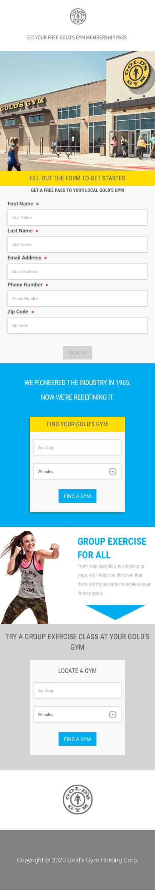
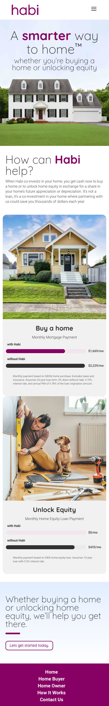
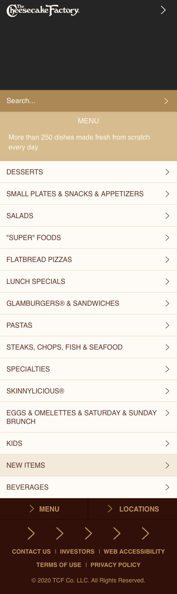

Gold's Gym

In this screenshot our eyes immediately zero in on the headers that are highlighted, helping the user subconsciously know where to go- the form to get started. After scrolling however, the blue box jumps out and the eyes then focus on a more important task: finding a Gold’s Gym near you.
Habi

This website doesn’t feel the need to fill space with unnecessary content, creating a clean, crisp design. This company helps people get into homes, a frustrating experience, so a clean design immediately gives the user a feeling of calm.
The Cheesecake Factory

The Cheesecake Factory is notorious for having many options on their menu to choose from, which can get frustrating and can overwhelm the user. This mobile site does a good job of organizing the categories and creating dropdown menus to browse through. By eliminating choices, the user does not get overwhelmed and can easily browse through the menu depending on what they want to focus on.